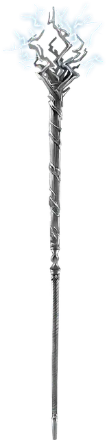

Посох грома и молнии
Staff of Thunder and Lightning
Посох, очень редкий (требуется настройка)

Рекомендованная стоимость 5 001-50 000 зм
Этот посох можно использовать как магический боевой посох, предоставляющий бонус +2 к броскам атаки и урона им. Он также обладает описанными ниже дополнительными свойствами. Каждое из свойств не может быть повторно использовано до следующего рассвета.
Молния. Если вы попали рукопашной атакой, используя этот посох, вы можете причинить цели дополнительный урон электричеством 2к6.
Гром. Если вы попали рукопашной атакой, используя этот посох, вы можете заставить посох издать громовой рокот, слышный в пределах 300 футов. Цель, по которой вы попали, должна преуспеть в спасброске Телосложения Сл 17, иначе она станет ошеломлённой до конца вашего следующего хода.
Удар молнии. Вы можете действием выпустить из кончика посоха молнию линией шириной 5 футов и 120 футов длиной. Все существа в этой линии должны совершить спасбросок Ловкости Сл 17, получая урон электричеством 9к6 при провале или половину этого урона при успехе.
Удар грома. Вы можете действием заставить посох издать громовой гул, слышный в пределах 600 футов. Все существа в пределах 60 футов от вас (исключая вас) должны совершить спасбросок Телосложения Сл 17. При провале существо получает урон звуком 2к6 и становится оглохшим на 1 минуту. При успехе существо получает половину урона и не становится оглохшим.
Гром и молния. Вы можете действием использовать одновременно свойства «Удар молнии» и «Удар грома». Это не учитывается при подсчёте того, использовали ли вы эти свойства в этот день, тратится использование лишь непосредственно этого свойства.